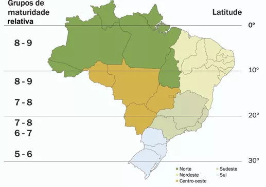

Como escolher a cultivar de soja correta?
A escolha da cultivar é um dos primeiros passos do produtor no momento de preparar a safra da soja. Existem inúmeras opções, no entanto a escolha errada da cultivar de soja pode comprometer a produtividade e consequentemente a lucratividade da lavoura.É preciso que o produtor avalie as diferentes ofertas de cultivares de soja existentes no mercado, de acordo com seu clima, região, ocorrência de pragas e o desempenho na safra. O primeiro passo para a escolha da cultivar é verificar se a mesma tem recomendação para a região que será plantada. Pois cada cultivar de soja tem uma faixa limitada de adaptação, devido ao seu grupo de maturação. Outro fator importante é a época de semeadura, pois muitos produtores pensam no milho em sucessão a soja. Por isso as empresas indicam as épocas preferenciais de semeadura, assim como a população de plantas, para cada cultivar em determinada região, o que nos permite maior chance de sucesso. Os fatores fitossanitários também são extremamente importantes no momento da escolha da cultivar de soja. Pois muitas vezes o que limita o potencial da cultivar é o ataque de pragas ou doenças. Portanto, cultivares de soja resistentes as principais pragas e doenças que ocorrem na região irão proporcionar melhores resultados. Novas áreas vêm sendo incorporadas ao sistema produtivo da soja, e estas acabam apresentando diferentes níveis de qualidade do solo. I Algumas cultivares apresentam limitações nestas áreas, mas, por outro lado, existem cultivares que se comportam melhor nestes novos ambientes.
Influência da Latitude na escolha da cultivar
A soja é uma cultura que apresenta alta sensibilidade ao fotoperíodo, por isso a adaptabilidade de cada cultivar varia com a latitude da região. Visando facilitar o entendimento do posicionamento de cultivares de soja em relação a latitude foram criados os grupos de maturidade relativa. Estes grupos indicam a faixa de latitude em que uma cultivar esta adaptada e apresenta maior produtividade. Os grupos de maturação variam de acordo com a latitude e são classificados de e (mais próximo dos pólos) a 10 (mais próximo do Equador). No Brasil, as cultivares de soja estão distribuídas nos grupos de maturidade de 5, na região sul do país, 10, na região norte. O posicionamento errado da cultivar de soja pode levar ao florescimento precoce ou aumentar o estágio vegetativo, e consequentemente reduzir a produção. Por isso, no momento da escolha da cultivar de soja o produtor deve ficar atento a latitude da região.
